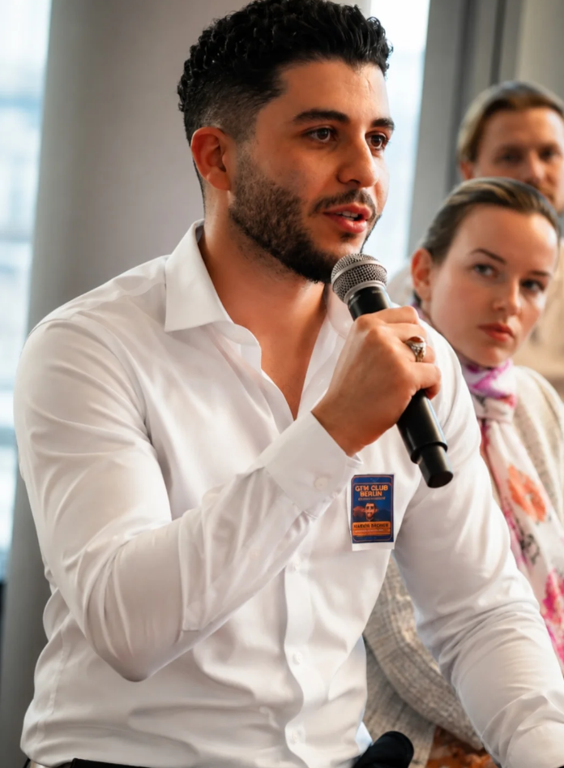

GTM Engineer building AI outbound systems that book meetings on autopilot — using Clay, Make.com, and AI workflows.

I came to Germany from Lebanon 4 years ago, navigating a new language, a new country, and a world mid-pandemic. What started with working at McDonald's and DHL turned into a journey through high-ticket B2B sales — and now into GTM engineering and AI outbound.
Most outbound teams don't have a lead problem. They have bad targeting, weak enrichment, and generic outreach. That's what I'm focused on solving through signal-based systems and AI workflows.
I'm currently studying Computer Software Engineering at the University of Duisburg-Essen, bridging technical knowledge with strategic GTM execution.
Tech Stack
Hands-on GTM systems designed for scale — not demos, real production workflows.
Built an automated lead qualification system using Make.com. Processes incoming leads, enriches data via APIs, and applies qualification logic to prepare outbound-ready lead lists at scale.
Built a signal-based system in Clay to identify and prioritize high-intent companies for GTM outreach. Uses real-time signals, enrichment, and scoring logic to filter companies and map decision-makers.
Building a solid foundation in software development, systems, and programming. This technical knowledge directly accelerates my GTM engineering work — bridging deep product understanding with strategic sales execution. Proficient in Python and Java, with exposure to Machine Learning.
Open to GTM Engineer and AI outbound opportunities. Reach out and let's talk.